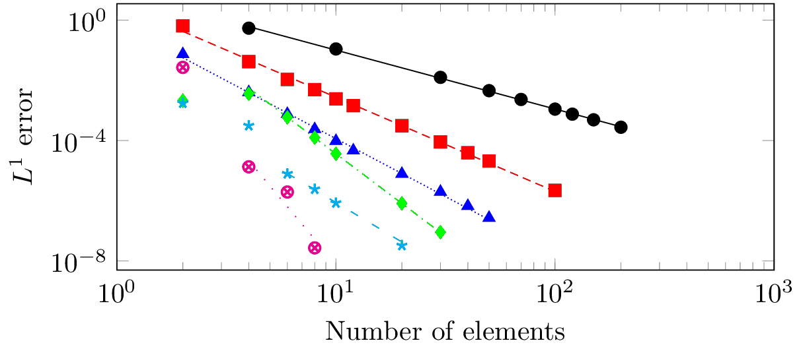
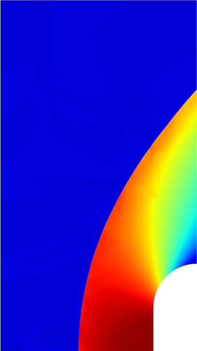

|
|
Research overviewHigh order shock trackingShock waves and other types of discontinuous or shape-gradient features commonly arise in critical applications in fields such as aerospace, astrophysics, combustion, and many more. Accurate resolution of these flow fields is a longstanding difficultly in computational science/engineering and usually requires extreme anisotropic mesh refinement and a large number of degrees of freedom.

Convergence of shock tracking method applied to the steady inviscid Burgers' equation with a discontinuous source term for polynomial orders p = 1, p = 2, p = 3, p = 4, p = 5, p = 6. The expected convergence rates of p + 1 are obtained in most cases. The slopes of the best-fit lines to the data points in the asymptotic regime are: 1.95, 3.13, 3.85, 5.47, 4.36, and 8.67, respectively. We developed a high-order accurate, nonlinearly stable numerical framework for solving steady conservation laws with discontinuous solution features such as shock waves. The method falls into the category of a shock tracking or r-adaptive methods and is based on the observation that numerical discretizations such as finite volume or discontinuous Galerkin methods that support discontinuities along element faces can perfectly represent discontinuities and provide appropriate stabilization through approximate Riemann solvers. The difficulty lies in aligning element faces with the unknown discontinuity. The proposed method recasts a discretized conservation law as a PDE-constrained optimization problem whose solution is a (curved) mesh that tracks the discontinuity and the solution of the discrete conservation law on this mesh. The discrete state vector and nodal positions of the high-order mesh are taken as optimization variables and the objective function is a discontinuity indicator that monotonically approaches a minimum as element faces approach the shock surface. A full space optimization solver is used to simultaneously converge the state vector and mesh to their optimal values to ensure the solution of the discrete PDE is never required on meshes that are not aligned with discontinuities.

Solution of two-dimensional Euler equations (density) with supersonic inflow M = 4 using high-order shock tracking framework with a piecewise polynomial basis (up to order 2) used to represent the solution and geometry. The deformed mesh provided by the tracking framework is included in the left image to show the high-quality curved elements that track the shock location. The mesh is not included in the right image to clearly show the solution features away from the shock. The method obtains optimal p+1 convergence rates, up to polynomial order p=6, in the L1 norm for a number for a number of 1D problems. Furthermore, it requires two orders of magnitude fewer degrees of freedom for a given accuracy than competitive adaptive mesh refinement to resolve supersonic flow (Mach 4) in 2D around a rounded square, a problem from the 5th International Workshop on High-Order CFD Methods. For this problem, errors less than 0.1% were obtained with fewer than 2000 degrees of freedom. Convergence history of mesh and solution toward optimal values. At convergence the mesh aligns with the shock and the discrete PDE residual nearly zero (infinity norm = 1e-8). Journal papers
Conference papers
Talks
Posters
|